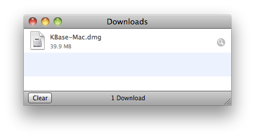
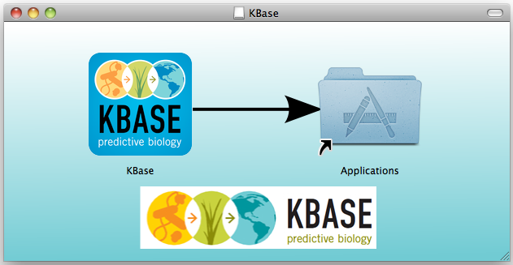
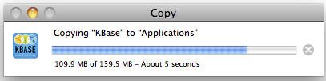
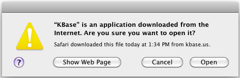
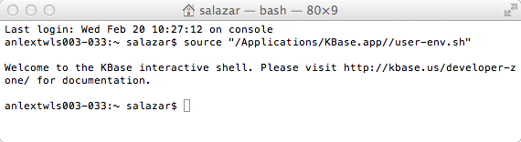

Purpose: How to set up the downloadable Mac DMG application bundle for KBase.
Required Prerequisite Activities: Sign up for a user account. Note that after completing the signup request, you will need to check your email for further instructions to complete the account signup process. Account access will be granted immediately upon completion of the process.
Suggested Prerequisite Activities: Some Basic Exercises using KBase
Related Tutorials: Publishing a New Central Store Software Revision and other Developer tutorials.
This tutorial will help you install kbase.app and work directly with KBase tools at an interactive shell prompt.
The easiest way to get started with the KBase tools in this manner is to use the downloadable Mac application bundle for the KBase. The application bundle contains an installation of the KBase toolkit and the runtime support code required for the toolkit. It also contains tools for creating a local development environment and for bundling a development environment into a new application bundle, thus enabling users to redistribute the KBase toolkit with additional functionality. Tools developed in this environment are additionally candidates for easy integration into the official KBase software releases and the publicly accessible IRIS site.
The KBase application bundle is available for download at the KBase tools site:
http://kbase.us/developer-zone/downloads/
Click on the link next to "Mac OS X package" and save the file to your computer.

Double-click the downloaded file; you should see
a window open with the KBase application in it:

Note
: recent versions of MacOS X (Mountain Lion) have a feature called Gatekeeper, which protects you from inadvertently installing malware on your Mac. If you have Gatekeeper, then when you double-click the DMG, you may get an error message that says that the file is damged and can't be opened.This page explains how to temporarily disable Gatekeeper so that you can install unsigned applications like the KBase DMG. After following those instructions, double-click the DMG again.
To install the application into your Applications
folder, just drag the KBase icon onto the Applications icon. You will
then see a status window:

The application will be installed on your
computer. To start it, go to your Applications folder and double-click
the KBase icon. The first time you run it you will see a warning about
a newly downloaded application:

Click "Open." A Terminal.app window will
open and you will be able to run KBase commands there.

You will now be able to work through any of the KBase tutorials by entering commands at the
terminal shell prompt.